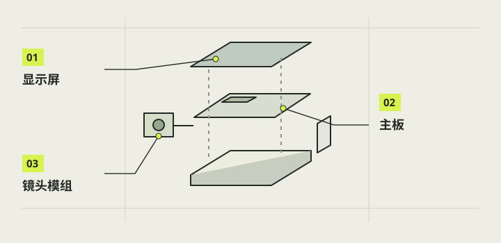

理解构造与接口
一台相机不只是把零件塞进壳里。图像从镜头和 IMX219 经 CSI 到主板，程序把取景显示到 DSI 屏并保存照片；拉杆与电源按钮由 GPIO 提供输入，电池经专用供电入口支撑整机。先画清这些关系，再安排实际空间，才能看见排线弯曲、插头可触及和开关行程的冲突。

本章完成目标
- 画出图像、输入和供电三条路径
- 区分物理针脚号与 BCM 号
- 为接口和维修留出装配空间
开始前准备好
- 已识别第 02 章的实物零件
- 已有本项目或自用硬件的接口资料
- 本章只作纸面和断电状态核对
- 物理针脚号
- 按 40 针排针位置从 1 到 40 编的编号。
- BCM 号
- 软件称呼芯片 GPIO 的编号，与物理针脚号不是同一套数字。
先画图像链
从 CM2 镜头开始画箭头：IMX219 通过相机排线进入 Pi 3B+ 的 CAMERA/CSI，程序取得画面后显示在 DSI 屏，同时把拍摄结果保存到存储卡。屏幕走 DISPLAY/DSI，不能把 CSI 与 DSI 因为排线相似而交换。照片方向与屏幕旋转也分别记录，不能由竖屏外观推断 JPEG 已正确旋转。
注意 / 排线锁扣和接点朝向必须按对应接口实物确认。
再画供电链
把电池的 5V 输出经过 Micro USB 供电线指向 Pi 的 PWR IN，再从已验证的 Pi 40 针 5V/GND 给本屏幕供电。标出屏幕红线物理 2、黑线物理 6，三位插壳中物理 4 对应空位。电池充电口属于电池包自身，不能把它当作 Pi 的供电输入或默认无缝切换接口。
注意 / 主板正常关机与电池实际切断输出是不同状态。
标明输入与指示
本项目拉杆灰 B 接地物理 9、蓝 C 到物理 11/BCM17；按钮黄 NO 到物理 5/BCM3、黑 NO 到物理 14/GND。按钮灯另有红 LED＋、白 LED−，当前已用串联约 1kΩ 的线束实现本机白灯联调。把信号、地和电源以不同线型画开，并在纸面写明物理号与 BCM 号。
注意 / 本机已核针位不能直接迁移到陌生主板或新启动配置。
给机构留运动空间
25 号盒架上的两个固定止挡限制 26 号转子的角度，外柄推动转子，转子叉口再接触金属开关杆。检查的是整段运动，不只是静止时“装得进去”。盒架、外柄、开关螺母、线束、机壳都要留空间；试样只能说明名义 CAD 位置，触发角、回弹力与实物公差仍要单独核。
注意 / 若金属杆先顶到自身极限，不通过强拨或削止挡继续使用。
检查可维修性与散热
给存储卡、充电口、屏幕及摄像头排线锁扣、按钮螺母预留可接近路径。散热片若贴在处理器顶盖，会增加主板高度，必须重新测外壳净空与排线距离；第二块散热片并非默认要贴。实际封壳后再测试取景、连续拍照、温升与回位，开放台面运行结果不能替代封壳结果。
注意 / 蓝色片材未确认类型时先不要粘贴散热片。
完成后，逐项打勾。
勾选帮助你记录进度，不代表项目替你完成了实机验收。
遇到问题，从这里排查。
设计图上只有零件位置、没有线束路径
补画每条排线与供电线的实际出口、弯曲和插拔方向，再做结构试配。
图上把 GPIO17 画到物理 17
回到 40 针官方表，按物理 11/BCM17 双编号重新核对。
本项目的实际进展
- V27 的 25/26 方向试样与后续 V28/V29 结构更新属于不同版本，不能仅凭同名接口推定整机通过。
- 2026-10-26 用户反馈白灯基本亮灭正常，未附当时最终接线照片或测得 LED 电流。
资料与核对依据
- D 实物接线交接 · camera-project/D-控件供电/交付/20261024-GPIO联调交接/给相机C的说明.md
- C 白灯用户实测 · camera-project/C-软件/qa/r4-live-setup-20261026/用户实测结果.md
- 结构机构试样说明 · camera-project/E-结构/reviews/20261027-parallel-lever-direction-trial-01/说明.md
- 树莓派官方 GPIO 资料 ↗
资料核对日期：2026-10-30。不同硬件、系统版本和材料需要重新验证。